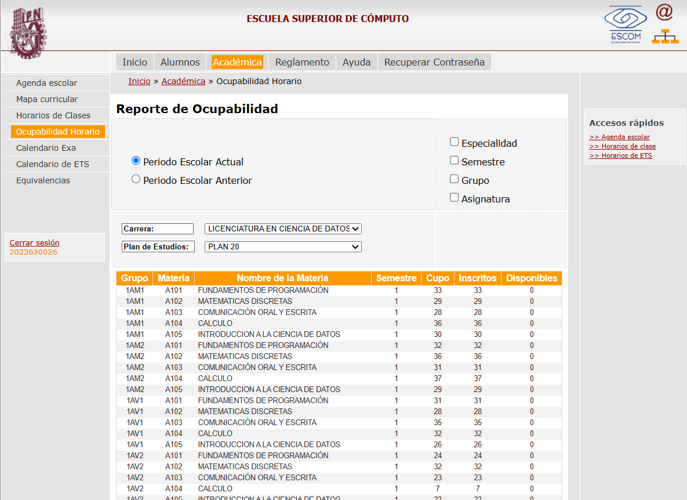
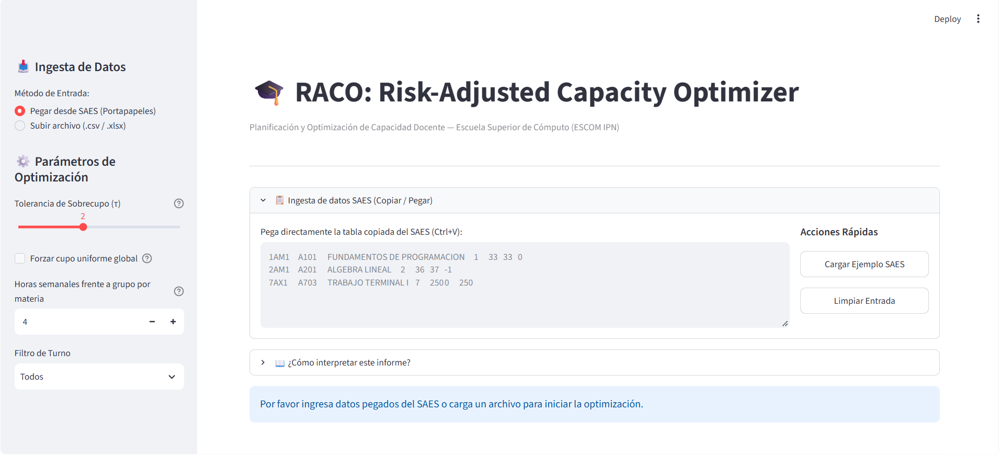
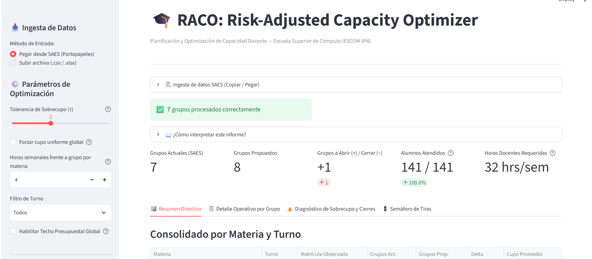
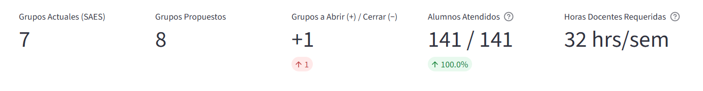
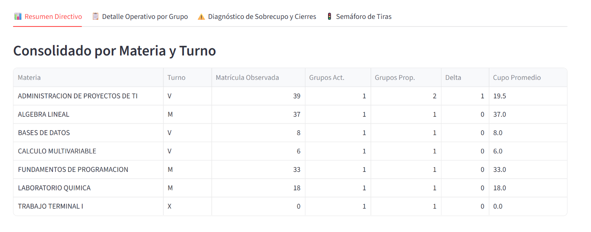
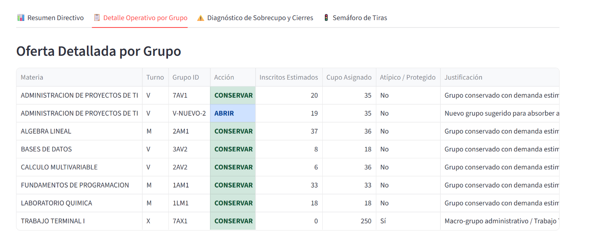
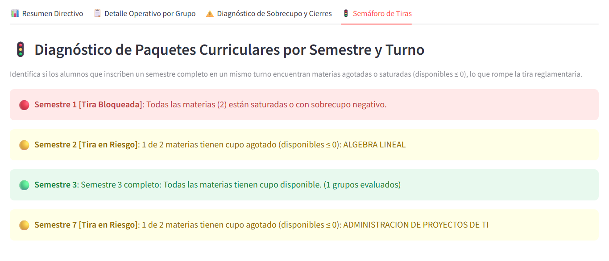
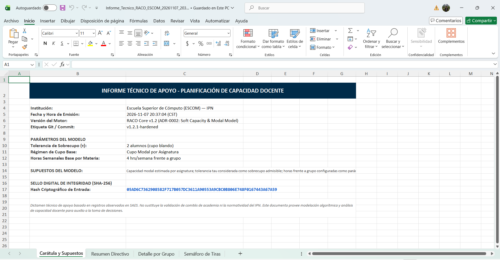

1. Introducción y Propósito
RACO (Risk-Adjusted Capacity Optimizer) es una herramienta de ingeniería de software y soporte a la decisión diseñada para las Jefaturas de Departamento Académico y la Subdirección Académica de la Escuela Superior de Cómputo (ESCOM - IPN). Su objetivo es automatizar en segundos el diagnóstico de ocupabilidad y la planeación de apertura, conservación o cierre de grupos docentes a partir de los reportes tabulares del Sistema de Administración Escolar (SAES).
Desarrollado al 100% con tecnologías abiertas (Python 3.12, Streamlit, Pydantic v2, OpenPyXL), sin licencias comerciales ni servidores de pago.
No solicita contraseñas, no realiza conexiones directas a la base de datos del SAES ni requiere instalar agentes en los equipos institucionales.
Procesa tablas copiadas del navegador (Ctrl+C / Ctrl+V), tolerando tabuladores, espacios, sobrecupos negativos (-1 a -4) y turnos M, V y X.
Aplica tolerancia de sobrecupo (τ = 2), deduce el cupo modal por asignatura y blinda automáticamente laboratorios (18 plazas) y Trabajo Terminal (250 plazas).
2. Flujo Operativo End-to-End (E2E) en 4 Pasos
El flujo operativo completo —desde la consulta del reporte en el SAES hasta la descarga del Informe Técnico en Excel con sello criptográfico SHA-256— se completa en cuatro pasos secuenciales.
Paso 1: Captura de Ocupabilidad en SAES
- Ingrese al portal del SAES ESCOM y diríjase al menú
Inicio » Académica » Ocupabilidad Horario. - Seleccione el Periodo Escolar Actual, la Carrera (ej. Licenciatura en Ciencia de Datos) y el Plan de Estudios.
- Seleccione con el cursor las filas de la tabla de ocupabilidad (columnas
Grupo | Materia | Nombre de la Materia | Semestre | Cupo | Inscritos | Disponibles) y presioneCtrl + C.

Paso 2: Interfaz e Ingesta en RACO
- Abra la interfaz de RACO. En la barra lateral izquierda encontrará el selector de Método de Entrada con la opción predeterminada “Pegar desde SAES (Portapapeles)” (o “Subir archivo (.csv / .xlsx)”).
- Pegue los registros copiados del SAES dentro del cuadro de texto central con
Ctrl + V(o presione el botón “Cargar Ejemplo SAES” para ejecutar una demostración inmediata). - Ajuste en el panel izquierdo los parámetros de planeación si lo requiere:
- Tolerancia de Sobrecupo (τ): Margen admisible de sobrecupo por grupo antes de abrir una nueva sección (por defecto:
2alumnos). - Forzar cupo uniforme global: Desmarcado por defecto para respetar el Cupo Modal propio de cada asignatura.
- Horas semanales frente a grupo por materia: Carga horaria base para estimar horas docentes (por defecto:
4hrs/semana). - Filtro de Turno:
Todos, Matutino (M), Vespertino (V) o Mixto/Administrativo (X).
- Tolerancia de Sobrecupo (τ): Margen admisible de sobrecupo por grupo antes de abrir una nueva sección (por defecto:

Al ingresar los datos, el analizador léxico valida la estructura de cada grupo y muestra de inmediato el cintillo verde de confirmación con el contador de grupos procesados correctamente.

Paso 3: Análisis y Diagnóstico en Pantalla
3.1 KPIs Superiores y Horas Docentes
En la parte superior del tablero se calculan instantáneamente los 5 Indicadores Clave de Desempeño (KPIs): Grupos Actuales (SAES), Grupos Propuestos, Grupos a Abrir (+) / Cerrar (-), Alumnos Atendidos (100% bajo política de cero rechazo) y Horas Docentes Requeridas por semana.

3.2 Resumen Directivo y Detección de Desbalances
La pestaña 📊 Resumen Directivo consolida la matrícula observada por asignatura y turno:
- Absorción por Cupo Blando (τ = 2): En Álgebra Lineal (Turno
M, matrícula de37sobre cupo de36), el excedente de 1 alumno es absorbido dentro de la tolerancia τ, manteniendo1grupo (Delta = 0) y evitando abrir un grupo adicional inviable. - Apertura Justificada por Demanda: En Administración de Proyectos de TI (Turno
V, matrícula de39), la demanda supera el umbral máximo permitido (35 + 2 = 37), por lo que RACO recomienda pasar de1a2grupos (Delta = +1), equilibrando el cupo promedio en19.5alumnos.

3.3 Protección de Laboratorios y Macro-Grupos de Trabajo Terminal
La pestaña 📋 Detalle Operativo por Grupo expone la decisión individual para cada grupo (CONSERVAR, ABRIR o CERRAR) aplicando las reglas de protección del ADR-0002:
- Respeto a Laboratorios: Grupos con cupo restringido por infraestructura física (ej.
1LM1en Laboratorio Química con cupo de18plazas) mantienen su capacidad nominal intacta. - Protección de Macro-Grupos Administrativos (
Atípico / Protegido = Sí): Secciones como7AX1(Trabajo Terminal I, TurnoX, cupo250) son aisladas automáticamente para que su cupo administrativo no distorsione la moda estadística ni se sugiera su cierre cuando registran0inscritos.

3.4 Semáforo de Tiras Curriculares y Tiras Bloqueadas
La pestaña 🚦 Semáforo de Tiras evalúa la salud de los paquetes curriculares por semestre para prevenir que los alumnos queden impedidos de inscribir su carga completa:
- 🔴 Tira Bloqueada Todas las asignaturas del semestre tienen disponibilidad agotada o sobrecupo negativo (
Disponibles ≤ 0). - 🟡 Tira en Riesgo Al menos una asignatura del semestre agotó sus lugares disponibles, generando un cuello de botella horario.
- 🟢 Tira Saludable Todas las asignaturas evaluadas del semestre cuentan con cupo disponible.

Paso 4: Exportación y Trazabilidad Criptográfica (SHA-256)
Al hacer clic en el botón “📥 Descargar Informe Técnico (.xlsx)” de la barra lateral, RACO genera en memoria un libro oficial de Microsoft Excel con 4 pestañas formateadas:
Carátula y Supuestos, Resumen Directivo, Detalle por Grupo y Semáforo de Tiras.

3. Preguntas Frecuentes y Soporte Técnico
¿Por qué el SAES reporta valores negativos en la columna “Disponibles” (ej. -1, -3)?
Durante las reinscripciones e inscripciones por comisaría, se autorizan sobrecupos por encima de la capacidad nominal del aula. Como el SAES calcula Disponibles = Cupo - Inscritos, el resultado es negativo. RACO procesa nativamente estos sobrecupos y los incorpora en la pestaña de diagnóstico.
¿Qué ocurre si al copiar del SAES se incluyen encabezados o renglones vacíos?
El analizador léxico (core/parser.py) filtra y descarta automáticamente encabezados repetidos, líneas en blanco y texto de navegación, procesando únicamente los renglones con nomenclatura válida de grupo politécnico (ej. 1AM1, 2AV2, 7AX1).
¿Por qué los grupos de Trabajo Terminal (7AX1 / 8AX1) no se cierran aunque tengan 0 inscritos?
Conforme al ADR-0002, todo grupo en turno mixto/administrativo (Turno X) o con cupo ≥ 100 plazas se clasifica como Macro-Grupo Administrativo Protegido. Se conserva íntegro para no afectar el registro administrativo de titulación y seguimiento.
| Concepto | Referencia Institucional |
|---|---|
| Institución y Unidad | Instituto Politécnico Nacional — Escuela Superior de Cómputo (ESCOM) |
| Sistema y Versión | RACO (Risk-Adjusted Capacity Optimizer) — v1.2.1-hardened |
| Verificación de Calidad | Suite automatizada pytest con 42 pruebas unitarias y de integración en verde |
| Repositorio Oficial | github.com/angel-dev-18/raco-escom |